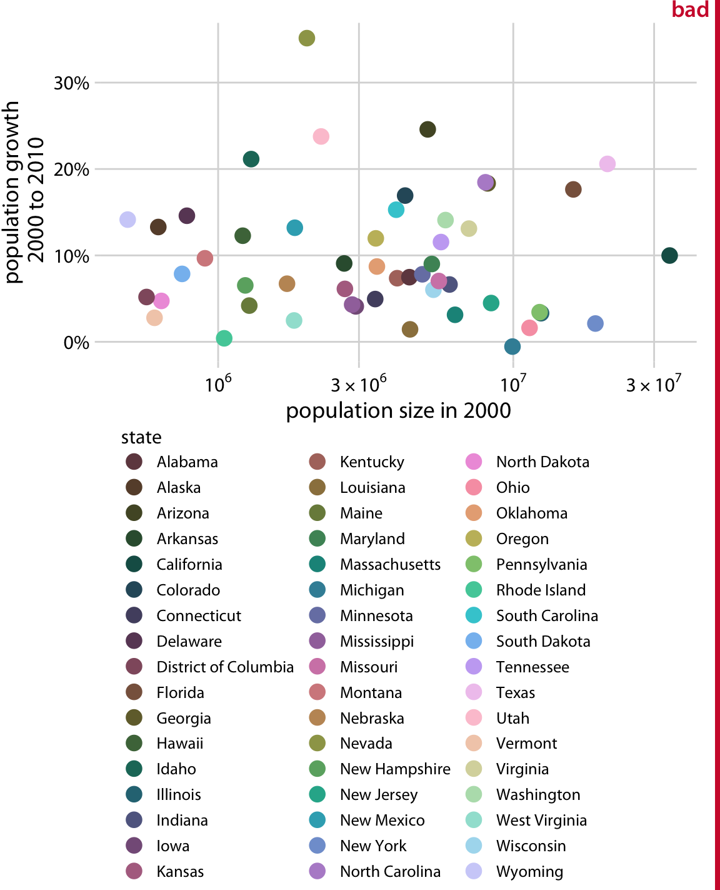

Color in Data Visualization: Less How, More Why
If our use of color in visualizations follows the Five Ws (and one H), we’re spending too much time on how, and not enough time on why. Color is too often seen as a tool to make pretty pictures, when it should be used to inform our audiences.
For one example, look at this “Color Emotion Guide” from marketing site TapClicks (one of the top results when you Google “color in data visualization” üßê).
The implicit suggestion here is that we should use color–whenever and however we can–to capture some form of emotion. Not only is this specific categorization rather odd (Monster energy drinks are peaceful, Virgin Mobile embodies “bold excitement”, and Harley Davidson motorcycles just scream “cheerful friendliness” ü§©), it leads novice practitioners to believe that color should be used just for the sake of using color.
Examples of gratuitous color use abound.

These examples illustrate my thesis: Too often, we ask how we can use color in our visualizations when we should be asking why we are using it.
Some combination of 1) default software settings, 2) an obsession with pretty color palettes, and 3) a lack of emphasis on careful color consideration has led to a sloppy use of color in some of our most popular data visualizations.
One of the most common errors I see is the overuse of color. In the charts above, for example, it’s evident that there are far too many colors, with no apparent reason for the
Often times, those creating visualizations will argue that they must include a 14 colors in their chart because the dataset has 14 data points of interest! It doesn’t help that the default settings of some of the most popular data viz tools (such as Excel) by default map categorical variables to colors.
The reality is, however, that if you need more than a handful of colors in your chart, you can probably present your data in a different way. Take this example from Datawrapper:
The takeaway? When you emphasize everything, you end up emphasizing nothing. That’s why its important that we stop uncritically asking how we can use color in our charts.
A data visualization is nothing more than a pretty picture if it does not inform its viewer. And if your chart presents 14 different data points all mapped to different colors, what kind of story is it telling? I really like this from Apple’s data visualization practitioner Elijah Meeks:
Rather than trying to find that impossible 20-color palette, stop using color when you have so many dimensions. It’s indistinguishable, it’s confusing and you’re just off-loading the complexity and decision-making to your reader.
That’s why color should be used more sparingly and more thoughtfully. Color is one of the most important parts of our visualizations, yet their current use is far too often gratuitous and overwhelming.
So, how should you use color?
Color is not the enemy. Rather, the (far too frequent) abuse and misuse of color is. So, how can you use color correctly? It depends on the purpose of your visualization, and, as a corollary, the purpose of color. You should ask: why am I using color?
1) Color to differentiate
One use of color is to draw attention to a data point of interest. This kind of color use would fall into the category of explanatory visualization, as opposed to its exploratory counterpart. If you’ve already explored, analyzed, and probed your data, you now need to deliver those insights to someone else (a supervisor, a client, or a curious friend). It would be a waste of time to present to them all of the exploratory work you did, which is why your presentation should make use of color to focus on your findings.
As practitioner Andy Kirk puts it, visualization practitioners in this stage of presentation should make grey their best friend. This is because the absence of color, not the excessive use of it, helps paint a picture and tell a story. By using grey as the primary color in a visualization, we automatically draw our viewers’ eyes to whatever isn’t grey. That way, if we are interested in telling a story about one data point, we can do so quite easily.
Here’s a quick example I made in R a while back:
The point of the visualization is not to show our audience the kindergarten vaccination rate of every county in Texas. It is instead to highlight the lowest rate–Terry County. This visualization leverages the grey fill of every other bar to immediately draw the audiences’ eyes to Terry County. Because we used only two colors, we can also highlight text in the subtitle to make the connection even clearer for our audience. Color–if used prudently–makes our visualizations more digestible and more informative.
Now, imagine if I visualized that same data in the following way:
Or, even worse:
After seeing those eyesores, aren’t you thankful that we used color sparingly in the initial plot?
Perhaps you’re interested in a county-by-county overview of 2016 election results. Although you might be tempted to code all counties according to their Trump/Clinton split, that’s prettier than it is insightful. What if, instead, we focused on those notable counties which flipped from one party to another between 2012 and 2016? From Kieran Healy’s book Data Visualization:
As we can see here, more counties flipped from majority-Democratic in 2012 to majority-Republican in 2016 than vice-versa. Because we’re focusing on only a fraction of all of the data points, we can also observe trends: The majority of counties that flipped had a small black population. No county that had over a ~53% black population flipped in either direction (annotation my own):
We also notice that flipping direction might be correlated with population size: nearly all of the flipping counties with a log population under 100,000 flipped to Republicans, while a greater proportion of all switching counties flipped toward the Democratic Party if their log population was greater than 100,000.
Color can, and should, be used to focus on the key parts of your visualization that you want your audience to see. By using color strategically, we can reduce the cognitive load required to understand what a visualization is depicting. Kalyuga et al. found that color-coding “ameliorated split-attention effects, resulting in lower perceived difficulty.” Other researchers have reported reductions in cognitive load when experiment participants were provided color-coding.
The overuse of colors can have the opposite effect. In one 2019 paper, researchers found “task-irrelevant digit colour information hampers the learning process only in instances where it triggers a conflict with the semantic properties of the base-code words.” What does this mean? If color encoding conflicts with the objects it represents, it impedes learning and weakens understanding. You don’t have to understand what all this means (I don’t dully understand all of it). This point is simply to illustrate: we should care about color. Color can be confusing and complicated, which is why its use should be intentional and minimal. It should be used to draw attention to the important parts of our charts.
2) Color to explore
Color does not have to be used in contrast to plain old grey. It can also be used as a tool to showcase a variety of data points all mapped to different colors. The important note is that this usage should be sparing. Given our prior examples, we definitely don’t want a plot like this one (from Chapter 19 of Claus Wilke’s Fundamentals of Data Visualization):

A more appropriate alternative may look something like this:

This way, the audience can still see general patterns in the data, but they don’t have to treat the fill legend like a lookup table! Most ideally, this chart would have some interactivity, so that a user could hover over a point to see its respective data.
In examples like this, where we are exploring rather than explaining, we leave the exploration to our users; they can see what they want to see and we give them the information they need to do exactly that.
Another common use of color for exploratory purposes is showing data progression across a gradient (e.g. low to high, bad to good, cold to warm).
These examples are most commonly found in choropleth maps, where the shade of color in a given state (or county, or region) corresponds to a value of interest. As an example, here’s a choropleth map I created using D3.js, which visualizes opioid-involved overdose deaths in the United States:
As we can see from the map, “rust belt” states are suffering from the opioid crisis to a much greater degree than those in western states. Choropleth maps utilize color to show regional variation and illustrate the power of color shading to represent the severity or extent of a given variable.
However, color in this context can also be misused. Data may be mapped according to a categorical color scale, or a rainbow scale which makes it difficult to see progression. This chart from Claus O. Wilke is a good (bad) example:

This chart is pretty! When rainbow scales are used in the media or elsewhere, it may be because their creator asked “How can I use color to make a pretty picture?” But this use of a non-monotonic color scale means that the relative size of differences between data points are difficult to detect. As an illustration, see how long it takes you to answer this question: using the legend above, what is the percent difference between this color and this color? (The answer is ~70%.)
In 2019, a group of researchers asked climate scientists to evaluate maps depicting changes in climate, where maps were either rainbow (similar to the Texas map above) or monotonic (such as the opioid map earlier). The researchers found that evaluations of magnitude difference in these maps were significantly more accurate when they were encoded with monotonic luminance scales rather than traditional rainbow scales. Other research consistently finds that rainbow color scales are both harmful and popular. All this to say: color matters.
So, color can be used for exploratory purposes. That is to say, color doesn’t have to be used exclusively for focus, and it can be used in charts that have colors other than just grey! But exploratory color usage (as with all use of color) requires caution.
Conclusion
Color is tricky. While it can take your plot to the next level, it can also ruin it. The difference? The questions we ask. Are we questioning how you can use color; which of the many palettes to use, and how we can map them across variables? These are important questions, but they have to be preceded by the question of why we use color in the first place. If color doesn’t serve the purpose of informing, clarifying, or guiding our audience, what purpose does it serve?
Connor Rothschild
Undergraduate at Rice University
I’m a senior at Rice University interested in public policy, data science and their intersection. I’m most passionate about translating complex data into informative and entertaining visualizations.